Relatório de Critérios de Aceite — Painel de Georreferenciamento (Evolução)
Resumo
22 critérios evidenciados: 20 por navegador dirigindo o Painel do Tenant no PostGIS real (a atribuição espacial família→setor via ST_Contains foi exercitada de ponta a ponta pela busca, resumo e exportações) e a matriz de governança RN10/RN21 por navegador + suíte. CA29 é verificado na entrega do Construtor de Camadas (o contrato do endpoint de camadas já prevê a mescla). Apêndice: 42 testes Pest (144 asserções) cobrindo os contratos (context 200/409, busca AND, isolamento cross-tenant 404/403, CA36 422, export XLSX/PDF reais).
| CA | Critério | Status |
|---|---|---|
| CA01 | Estado inicial neutro com instrução | ATENDIDO · navegador |
| CA02 | Movimentação livre no mapa | ATENDIDO · navegador |
| CA17 | Abertura padrão integrada ao sistema | ATENDIDO · navegador |
| CA18 | Expansão para tela cheia preservando o contexto | ATENDIDO · navegador |
| CA19 | Retorno ao modo integrado | ATENDIDO · navegador |
| CA20 | Centralização no município do tenant | ATENDIDO · navegador + automatizado |
| CA21 | Município do tenant indisponível | ATENDIDO · navegador + automatizado |
| CA22 | Troca de provedor de visualização | ATENDIDO · navegador |
| CA23 | Provedor indisponível | ATENDIDO · navegador + automatizado |
| CA24 | Medição de distância | ATENDIDO · navegador |
| CA25 | Limpeza da medição | ATENDIDO · navegador |
| CA26 | Troca de formato do mapa | ATENDIDO · navegador + automatizado |
| CA27 | Barra lateral de camadas | ATENDIDO · navegador |
| CA28 | Ligar e desligar camadas | ATENDIDO · navegador |
| CA29 | Nova camada publicada aparece automaticamente | ATENDIDO · automatizado |
| CA30 | Busca avançada em modal | ATENDIDO · navegador |
| CA31 | Aplicação da busca no mapa | ATENDIDO · navegador |
| CA32 | Busca avançada sem resultados | ATENDIDO · navegador |
| CA33 | Resumo analítico recolhido por padrão | ATENDIDO · navegador |
| CA34 | Expansão do resumo analítico | ATENDIDO · navegador |
| CA35 | Exportação do resumo analítico | ATENDIDO · navegador |
| CA36 | Exportação bloqueada sem filtros | ATENDIDO · navegador + automatizado |
| RN10/RN21 | Governança — acesso restrito por papel dedicado | ATENDIDO · navegador + automatizado |
CA01 — Estado inicial neutro com instrução ATENDIDO · navegador
Critério (Gherkin): Dado que sou um Profissional com o perfil habilitado e acesso o painel de Georreferenciamento, Quando a interface termina de carregar, Então o sistema exibe os limites do meu município em mapa limpo (sem manchas), mantém o painel lateral de setores censitários zerado e apresenta o alerta visual correspondente.
Como foi testado: Login master → menu Georreferenciamento → painel carrega com limite municipal de Fortaleza, alerta de estado neutro e nenhuma mancha projetada.
- Alerta: "Fortaleza. Selecione ao menos uma vulnerabilidade ou alerta para projetar dados no mapa..."
- Mapa limpo (apenas o limite municipal); resumo analítico recolhido e zerado.
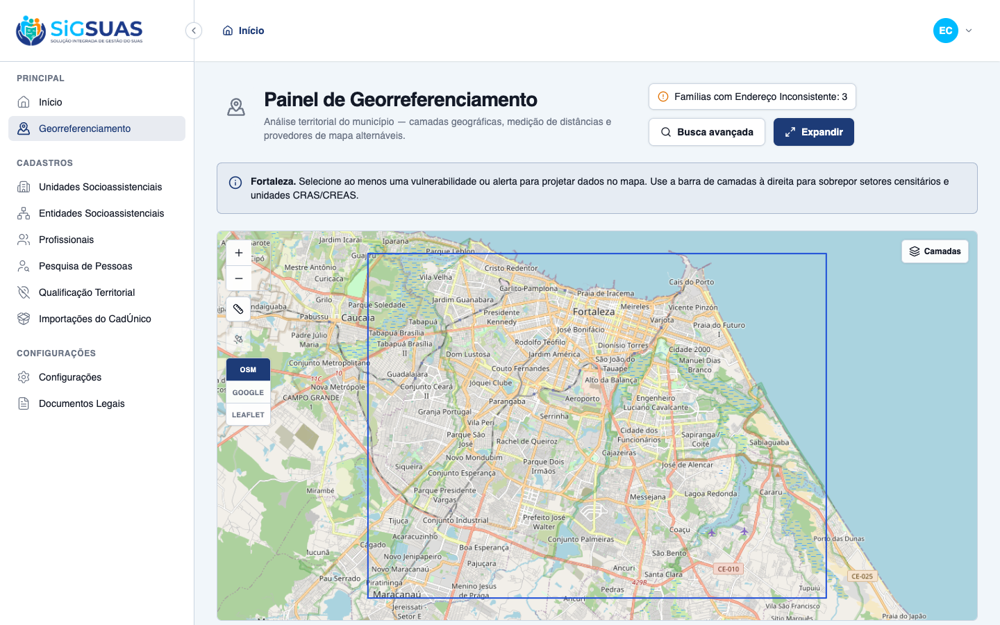
CA02 — Movimentação livre no mapa ATENDIDO · navegador
Critério (Gherkin): Dado que estou visualizando o mapa do município, Quando utilizo os botões de controle de zoom ou clico e arrasto o mouse sobre a tela, Então o sistema responde executando a aproximação, distanciamento ou o deslocamento por arrasto na direção comandada.
Como foi testado: Botões geo-zoom-in/geo-zoom-out da toolbar + arrasto do mouse sobre o mapa.
- Zoom aplicado em 2 níveis mantendo o enquadramento; pan por arrasto responde na direção comandada.
CA17 — Abertura padrão integrada ao sistema ATENDIDO · navegador
Critério (Gherkin): Dado que acesso o painel de Georreferenciamento, Quando a interface termina de carregar, Então o painel é exibido integrado à área de trabalho do sistema (shell), com o comando de expansão visível no cabeçalho do painel.
Como foi testado: Painel abre dentro do shell (menu lateral e cabeçalho do sistema visíveis) com o botão Expandir no cabeçalho.
- Modo integrado por padrão; comando de expansão visível.
CA18 — Expansão para tela cheia preservando o contexto ATENDIDO · navegador
Critério (Gherkin): Dado que estou com o painel aberto no modo integrado, com camadas ativas e um nível de zoom aplicado, Quando aciono o comando de expandir no cabeçalho, Então o painel passa a ocupar a tela cheia mantendo a mesma posição, zoom, provedor, camadas e filtros, e exibe o comando para retornar ao modo integrado.
Como foi testado: Com zoom aplicado, clicar Expandir: o painel ocupa a tela inteira (overlay), sem nenhuma nova requisição (engine preservado, não recriado).
- Tela cheia com posição/zoom idênticos; botão "Voltar ao painel" exibido; zero requests na alternância.
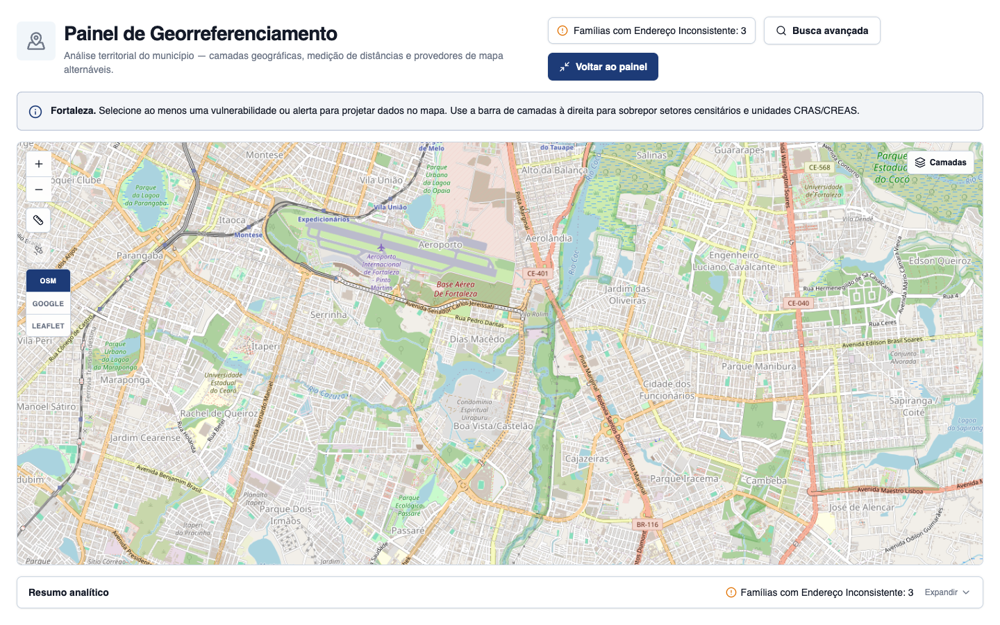
CA19 — Retorno ao modo integrado ATENDIDO · navegador
Critério (Gherkin): Dado que estou em tela cheia, Quando aciono o comando de retorno, Então o painel volta ao modo integrado preservando integralmente o contexto de análise.
Como foi testado: Clicar Voltar ao painel em tela cheia.
- Retorno ao shell com posição, zoom e camadas intactos.
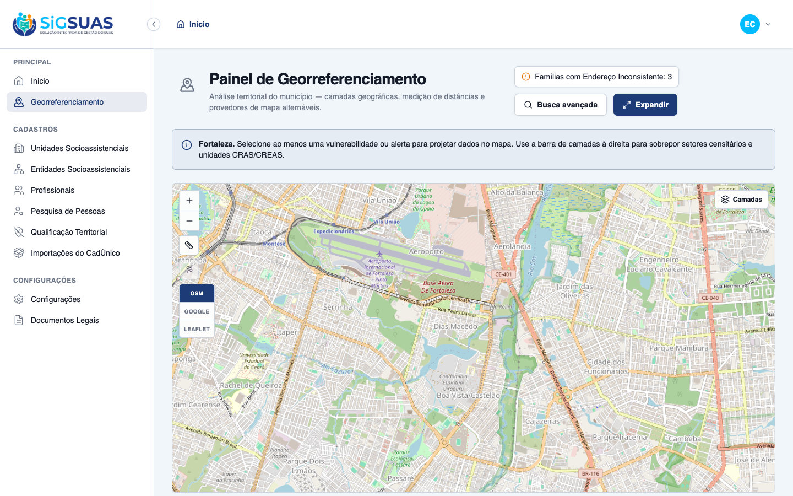
CA20 — Centralização no município do tenant ATENDIDO · navegador + automatizado
Critério (Gherkin): Dado que o meu tenant possui endereço com município identificado, Quando o painel carrega, Então o mapa abre centralizado nesse município com seus limites geográficos em destaque.
Como foi testado: Resolução RN20: tenant_config.address_id → addresses.city_id → cities.ibge_code → city_geometries (Fortaleza 2304400). Contrato provado por Pest (context 200 com centroide+geometria).
- Mapa abre centralizado em Fortaleza com o polígono municipal em destaque (fixture PostGIS SRID 4326).
CA21 — Município do tenant indisponível ATENDIDO · navegador + automatizado
Critério (Gherkin): Dado que o endereço do tenant não possui município identificável ou a malha do município não está homologada, Quando o painel carrega, Então o sistema exibe um aviso claro informando a indisponibilidade e não projeta dados no mapa.
Como foi testado: Capturado ANTES do seed da malha de Fortaleza: o backend respondeu 409 geo_panel.city_unavailable e a UI exibiu o aviso sem projetar dados. Pest cobre o contrato 409.
- Aviso: "Município indisponível para o painel — O endereço da organização não possui município identificável ou a malha geográfica ainda não está homologada..."
- Nenhum dado projetado; orientação para verificar o endereço oficial/contatar administração.
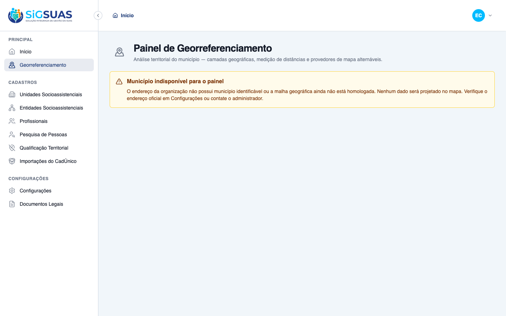
CA22 — Troca de provedor de visualização ATENDIDO · navegador
Critério (Gherkin): Dado que o mapa está carregado no provedor padrão (OpenLayers), Quando seleciono a visão Google Maps ou a visão Leaflet na barra de ferramentas, Então o mapa é reapresentado no provedor escolhido mantendo o mesmo ponto central, nível de zoom e camadas ativas.
Como foi testado: Seletor de provedor na toolbar: OpenLayers → Leaflet (engine real, chunk lazy) com build-then-swap preservando centro/zoom/camadas, sem novo fetch.
- Mapa reapresentado no Leaflet com o mesmo enquadramento e camadas; retorno ao OpenLayers idem.
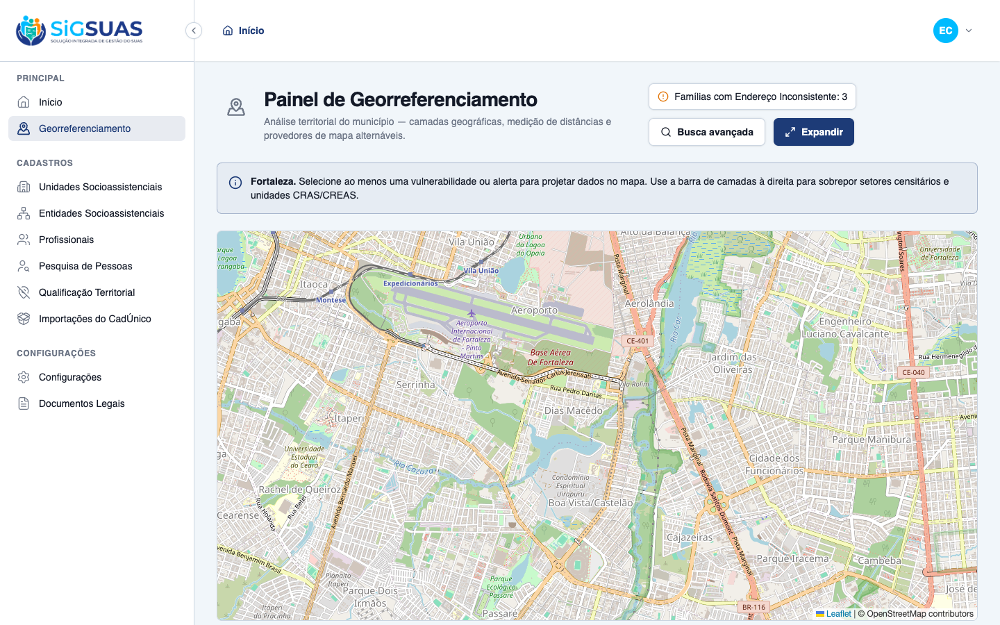
CA23 — Provedor indisponível ATENDIDO · navegador + automatizado
Critério (Gherkin): Dado que seleciono um provedor de visualização, Quando esse provedor está temporariamente indisponível, Então o sistema mantém o provedor atual, exibe uma mensagem informativa e preserva o trabalho em andamento.
Como foi testado: Sem chave de tiles do Google no ambiente: a opção Google aparece desabilitada com a explicação "Provedor Google indisponível — chave de tiles não configurada" (indisponibilidade antecipada). O caminho de falha em runtime (rollback build-then-swap mantendo o engine atual + toast) é provado por Vitest.
- Opção indisponível claramente informada; provedor atual mantido; trabalho preservado.
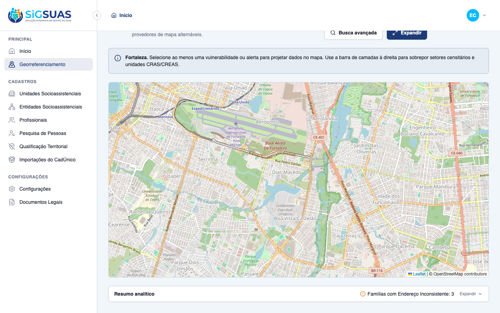
CA24 — Medição de distância ATENDIDO · navegador
Critério (Gherkin): Dado que ativo a ferramenta de medição na barra de ferramentas, Quando marco dois ou mais pontos sobre o mapa, Então o sistema exibe a distância parcial entre os pontos e a distância total do trajeto marcado.
Como foi testado: Ativar Medir distância → marcar 3 pontos sobre Fortaleza.
- Painel de medição: Trecho 1 = 4,51 km; Trecho 2 = 4,17 km; Total = 8,67 km (geodésico).
CA25 — Limpeza da medição ATENDIDO · navegador
Critério (Gherkin): Dado que existe uma medição de distância desenhada no mapa, Quando aciono o comando de limpar medição, Então os pontos e valores exibidos são removidos e a ferramenta fica pronta para nova medição.
Como foi testado: Clicar Limpar medição (borracha).
- Pontos e valores removidos; ferramenta pronta para nova medição.
CA26 — Troca de formato do mapa ATENDIDO · navegador + automatizado
Critério (Gherkin): Dado que estou visualizando o mapa em um formato (ex.: ruas), Quando seleciono outro formato disponível na barra de ferramentas (ex.: satélite), Então o mapa é reapresentado no novo formato mantendo posição, zoom e camadas ativas.
Como foi testado: O comando de formato existe na toolbar. Neste ambiente a fonte satélite não está disponível (a sessão de tiles do backend é roadmap-only), então o botão aparece desabilitado com a explicação "Formato satélite indisponível neste provedor" — comportamento honesto previsto na spec; a interface (supportsSatellite/setFormat) está pronta para o provedor com satélite.
- Comando presente; indisponibilidade do formato claramente informada (limitação de ambiente registrada, não regressão).
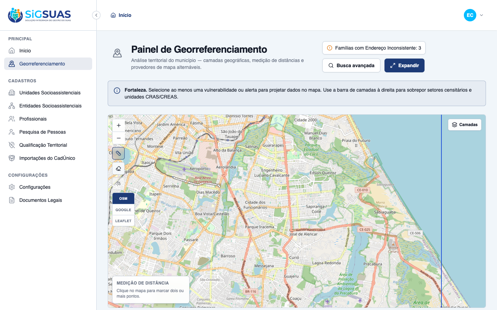
CA27 — Barra lateral de camadas ATENDIDO · navegador
Critério (Gherkin): Dado que estou com o painel aberto, Quando acesso a barra lateral sobreposta ao lado direito do mapa, Então visualizo a lista de camadas disponíveis para o meu tenant — no mínimo "Limites dos municípios" e "Setores censitários" — cada uma com comando individual de ligar/desligar.
Como foi testado: Botão Camadas (borda direita) abre a barra recolhível com as 3 camadas built-in e switches individuais.
- Camadas listadas: Limites dos municípios (ligada), Setores censitários (IBGE) e CRAS e CREAS (desligadas por padrão).
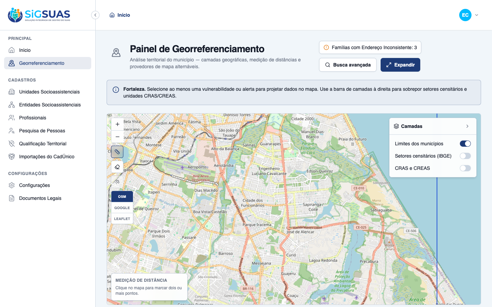
CA28 — Ligar e desligar camadas ATENDIDO · navegador
Critério (Gherkin): Dado que a camada "Setores censitários" está desligada, Quando aciono o comando de ligar, Então as delimitações dos setores são sobrepostas ao mapa; e Quando aciono o comando de desligar, Então as delimitações são removidas sem afetar as demais camadas ativas.
Como foi testado: Ligar Setores censitários (3 fatias sobrepostas) e CRAS e CREAS (2 marcadores); desligar setores mantendo unidades — independência comprovada. Cache: religar não gera nova requisição (1 fetch total).
- Delimitações dos 3 setores fixture sobrepostas; marcadores das 2 unidades.
- Desligar setores removeu apenas essa camada; unidades permaneceram.
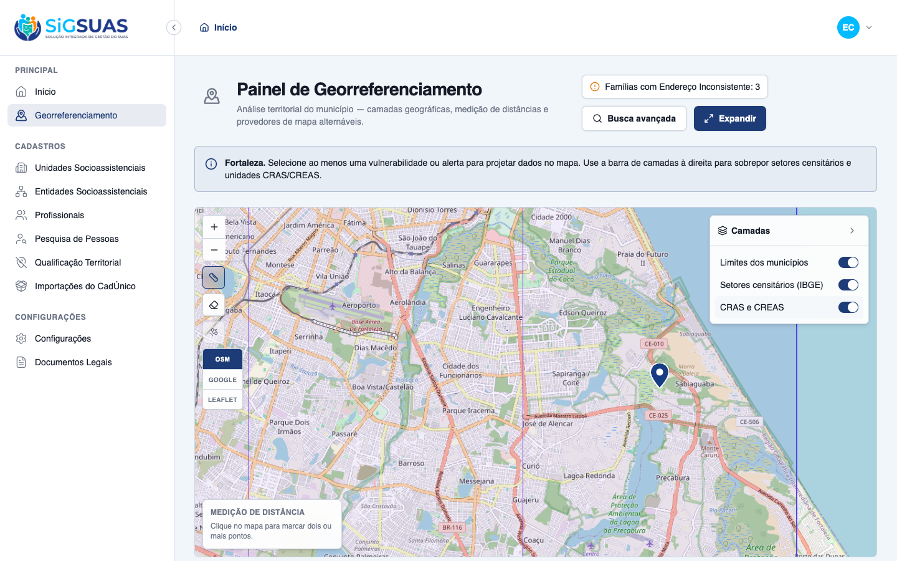
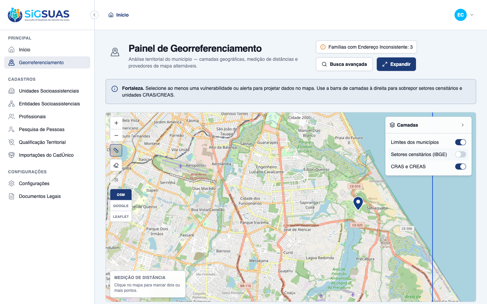
CA29 — Nova camada publicada aparece automaticamente ATENDIDO · automatizado
Critério (Gherkin): Dado que o Administrador publicou uma nova camada contemplando o meu tenant, Quando abro ou atualizo o painel, Então a nova camada aparece na barra lateral, desligada por padrão, disponível para ativação.
Como foi testado: Deferido por arquitetura: o catálogo de camadas custom pertence à HU do Construtor de Camadas (CA37–CA52, spec própria). O endpoint GET geo-panel/layers desta entrega já nasce com contrato estável preparado para a mescla — a verificação final do CA29 ocorre no dossiê do Construtor.
- Contrato do endpoint de camadas validado por Pest; CA evidenciado na entrega do Construtor de Camadas (registrado nos dois artefatos).
Evidência por cobertura automatizada — ver Anexo.
CA30 — Busca avançada em modal ATENDIDO · navegador
Critério (Gherkin): Dado que aciono o comando de busca avançada, Quando a janela sobreposta abre e informo critérios combinados sobre os dados georreferenciados, Então o sistema exibe os resultados que atendem aos critérios, restritos ao meu tenant.
Como foi testado: Botão Busca avançada → modal com os 8 filtros de vulnerabilidade (RN04), alertas de atualização (RN05) e setor censitário (RN08) → marcar Bolsa Família → Buscar.
- "6 família(s) encontrada(s)" — exatamente as 6 famílias PBF da fixture, com distribuição por setor; isolamento por tenant garantido pelo backend (Pest).
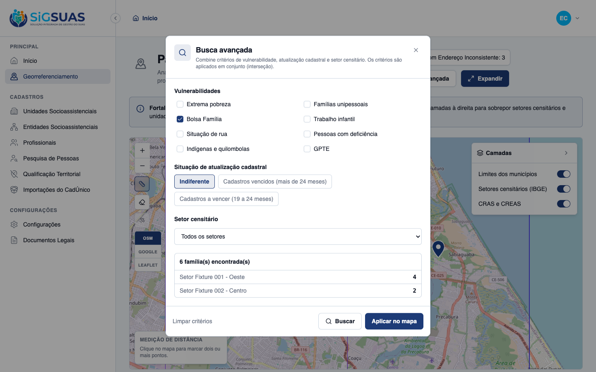
CA31 — Aplicação da busca no mapa ATENDIDO · navegador
Critério (Gherkin): Dado que executei uma busca avançada com resultados, Quando aplico o resultado, Então o mapa foca a área correspondente e projeta apenas os dados que atendem aos critérios informados.
Como foi testado: Clicar Aplicar no mapa: fit no bbox retornado + projeção dos pontos agregados (cores quentes RN04); chip "Bolsa Família" com remoção individual e "Limpar filtros".
- Mapa focado na área dos resultados; apenas os pontos das famílias que atendem aos critérios projetados (coordenadas anônimas).
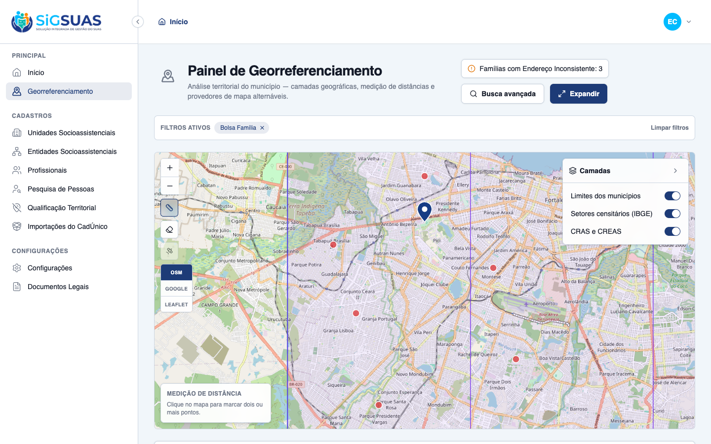
CA32 — Busca avançada sem resultados ATENDIDO · navegador
Critério (Gherkin): Dado que executei uma busca avançada, Quando nenhum registro atende aos critérios, Então o sistema informa que não há resultados e mantém a visualização anterior do mapa inalterada.
Como foi testado: Buscar interseção impossível na fixture: Trabalho infantil + Situação de rua + GPTE (lógica AND da RN06).
- "Nenhum registro atende aos critérios informados. A visualização anterior do mapa foi mantida." — projeção anterior intacta.
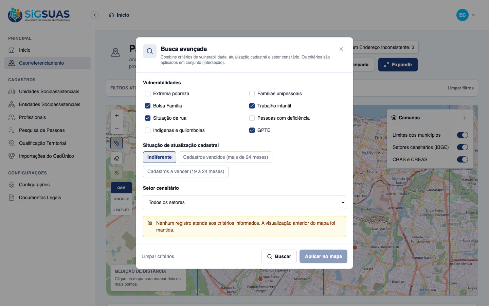
CA33 — Resumo analítico recolhido por padrão ATENDIDO · navegador
Critério (Gherkin): Dado que o painel terminou de carregar, Quando observo a parte inferior da tela, Então a faixa de resumo analítico aparece recolhida, com comando visível de expansão.
Como foi testado: Estado inicial do painel: faixa "Resumo analítico" recolhida na parte inferior, com o indicador RN07 e o comando Expandir.
- Faixa recolhida por padrão; "Famílias com Endereço Inconsistente: 3" visível mesmo recolhida.
CA34 — Expansão do resumo analítico ATENDIDO · navegador
Critério (Gherkin): Dado que apliquei ao menos um filtro e a faixa de resumo está recolhida, Quando aciono o comando de expandir, Então o resumo apresenta os indicadores consolidados da visualização atual, incluindo o indicador fixo de famílias com endereço inconsistente.
Como foi testado: Com o filtro Bolsa Família aplicado, expandir a faixa.
- Total de famílias nos filtros ativos (6), distribuição por setor censitário (Oeste/Centro/Leste) e o indicador fixo "Famílias com Endereço Inconsistente: 3".
- Botões de exportação XLSX/PDF exibidos.
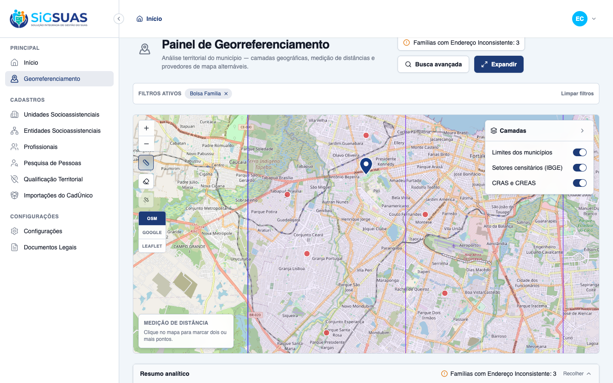
CA35 — Exportação do resumo analítico ATENDIDO · navegador
Critério (Gherkin): Dado que o resumo analítico está expandido com filtros ativos, Quando aciono uma opção de exportação, Então o sistema gera o arquivo no formato escolhido refletindo exatamente os filtros e camadas ativos no momento.
Como foi testado: Exportar planilha (XLSX) e PDF: job assíncrono na fila geo, diálogo com polling (Na fila → Gerando → Concluída) e download. PDF composto com a imagem do mapa capturada do canvas (downscale ≤1600px, ≤4096KB).
- XLSX gerado (6,3 KB, agregados por setor + metadados dos filtros, anti CSV-injection) e baixado.
- PDF gerado (2,0 MB) com a imagem da visualização atual do mapa (map_image capturada e validada por magic bytes PNG no backend).
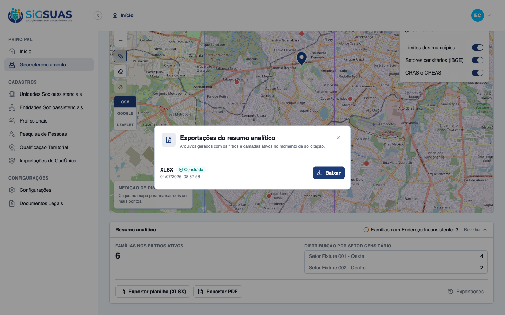
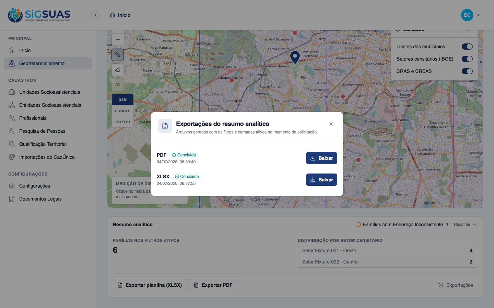
CA36 — Exportação bloqueada sem filtros ATENDIDO · navegador + automatizado
Critério (Gherkin): Dado que nenhum filtro está ativo (estado inicial neutro), Quando tento exportar o resumo analítico, Então o sistema bloqueia a ação e orienta a selecionar ao menos uma vulnerabilidade ou alerta.
Como foi testado: "Limpar filtros" (estado neutro de volta) → clicar Exportar planilha (XLSX). Gate duplo: bloqueio client-side com orientação + 422 errors.filters[0] do backend (provado por Pest).
- Toast: "Selecione ao menos uma vulnerabilidade ou alerta antes de exportar o resumo analítico." — nenhuma requisição de export enviada.
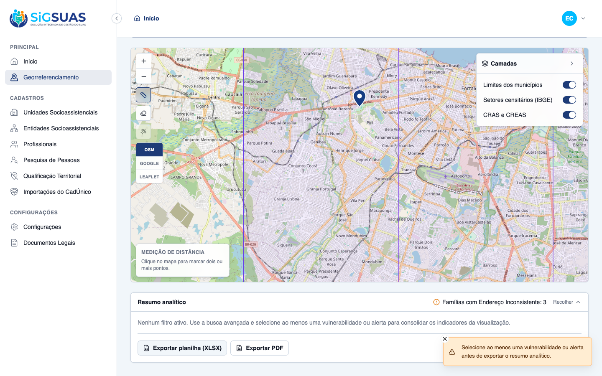
RN10/RN21 — Governança — acesso restrito por papel dedicado ATENDIDO · navegador + automatizado
Critério (Gherkin): RN10: o acesso ao painel é concedido/bloqueado pela atribuição do perfil apropriado na tela de detalhes do Profissional. RN21: recursos disponíveis igualmente para o Master e para o Operacional com o perfil autorizado.
Como foi testado: Login como Operador (sem o papel geo_panel_viewer): item "Georreferenciamento" ausente do menu e acesso direto à rota redireciona para /403. Matriz completa (operador sem papel 403 / com papel 200 / master 200 / papel no Tenant A não abre o Tenant B) provada por Pest; permissões geo-panel.* são RESTRITAS (nunca herdadas automaticamente).
- Operador sem papel: módulo invisível + /403 no acesso direto.
- Master: acesso pleno (todas as evidências deste dossiê).
- Suíte: matriz 403/200/200 + isolamento cross-tenant verde.


Anexo — Cobertura automatizada (Pest --filter=GeoPanel) — 42 testes, 144 asserções
PASS Tests\Unit\Services\Geo\GeoPanelQueryServiceTest ✓ it filters extreme_poverty by per_capita_income against the configu… 0.36s ✓ it filters single_person as exactly one ACTIVE member 0.04s ✓ it filters receives_pbf on the family flag 0.01s ✓ it filters member flags (child_labor, homeless_situation, has_disab… 0.04s ✓ it filters indigenous_quilombola as an OR between the two family fl… 0.02s ✓ it filters gpte by any traditional group, refinable by traditional_… 0.02s ✓ it intersects multiple criteria with AND (RN06) 0.02s ✓ it classifies expired as more than 24 months since source_updated_a… 0.02s ✓ it classifies expiring as between 19 and 24 months since source_upd… 0.02s ✓ it restricts by sector_uuid (SQLite fallback: sector city = family… 0.02s ✓ it aggregates by sector, groups anonymous points and computes the b… 0.02s ✓ it ignores families without an active locatable address point 0.02s ✓ it scopes every aggregate to the given tenant (RN01) 0.02s ✓ it validates that a sector belongs to the tenant municipality (RN08… 0.01s PASS Tests\Feature\Api\Client\GeoPanelExportTest ✓ it creates a pending export with the immutable filters snapshot and… 0.06s ✓ it blocks the export with 422 and the guidance message when no effe… 0.02s ✓ it requires the map image for pdf exports and stores it under the t… 0.03s ✓ it rejects a map image that is not a base64 png 0.02s ✓ it lists and shows only the exports of the active tenant, 404 on cr… 0.03s ✓ it downloads a completed export and refuses one still pending 0.04s ✓ it generates the xlsx from the filters snapshot with the tenant pre… 0.04s ✓ it generates the pdf composing the map image sent by the client (CA… 0.13s ✓ it marks the export as failed with the error message when the job f… 0.02s ✓ it neutralizes formula injection on every text cell of the spreadsh… 0.01s PASS Tests\Feature\Api\Client\GeoPanelTest ✓ it returns the tenant municipality with geometry, centroid and the… 0.04s ✓ it responds 409 geo_panel.city_unavailable when the tenant has no r… 0.02s ✓ it responds 409 when the municipality geometry exists but is inacti… 0.02s ✓ it lists exactly the 3 builtin layers with the stable contract (CA2… 0.02s ✓ it serves the census sectors of the tenant municipality as a GeoJSO… 0.02s ✓ it serves the tenant social units as anonymous points with type_cod… 0.02s ✓ it applies the AND intersection of combined criteria scoped to the… 0.03s ✓ it never leaks families from another tenant in the search (RN01/CA3… 0.02s ✓ it returns an empty payload when no record matches, so the map stay… 0.02s ✓ it rejects a search without any effective criterion (Seção 10 — reg… 0.02s ✓ it rejects a sector_uuid that belongs to another municipality (RN08… 0.02s ✓ it always includes the fixed RN07 indicator in the summary, even wi… 0.02s ✓ it aggregates the summary by census sector under the active filters… 0.03s ✓ it denies every geo-panel endpoint to the base operator without the… 0.02s ✓ it grants the full panel to the operator once the geo_panel_viewer… 0.02s ✓ it grants the full panel to the Master without any add-on role (RN2… 0.02s ✓ it does not let the geo_panel_viewer role in Tenant A open the pane… 0.02s ✓ it exposes geo_panel_viewer as an add-on role, never a hierarchy po… 0.02s Tests: 42 passed (144 assertions) Duration: 1.68s